Instalações
1) Para a instalação dos arquivos:
jdk-8u221-windows-x64 (JAVA)
Instalar na pasta C:\Program Files\Java
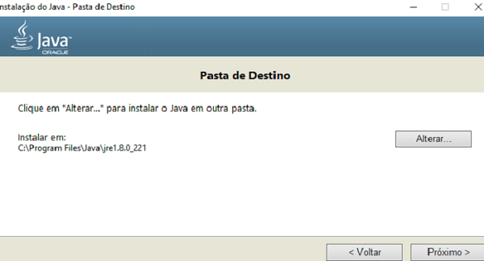
Instale o arquivo:
blaze-advisor_7.5.7500.v11760_Windows (Blaze)
No meu caso, ele está na seguinte pasta: C:\Blaze.
2) Criar uma pasta em C:\Blaze e copiar extrair o arquivo eclipse-jee-oxygen-3a-win32-x86_64.zip para dentro desta pasta.
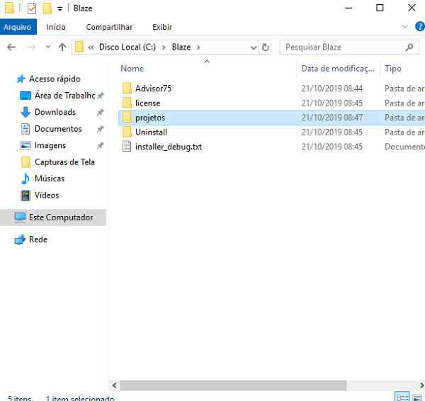
3)Renomear a pasta eclipse-jee-oxygen-3a-win32-x86_64 para eclipse para facilitar a localização.
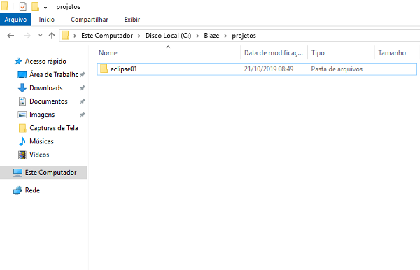
4)Executar eclipse.exe que está dentro da pasta eclipse.
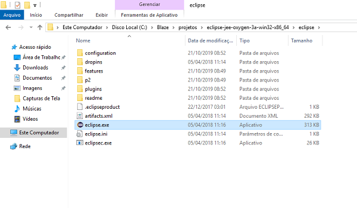
Aviso: Escolher aonde ira ficar a pasta workspace do eclipse.
No meu caso, escolhi a própria pasta do eclipse.
C:\Blaze\projetos\eclipse01\eclipse-workspace
5)Instalar o plug-in do Blaze: após abrir o eclipse e escolher o workspace, devemos preparar o eclipse para suportar o Blaze.
- No eclipse, ir em: Help - Install new software.
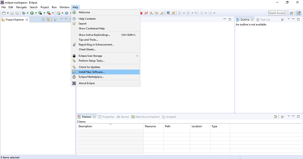
- Add - local.
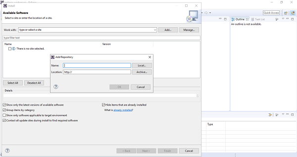
- 6)Ir na pasta C:\Blaze\Advisor75\EclipsePluginUpdateSite
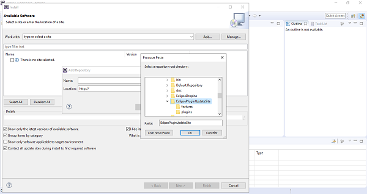
- 7)Depois de selecionar a pasta, digitar Blaze Advisor e clicar em ok.
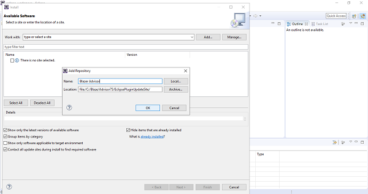
- 8)Selecionar Blaze Adivisor e Blaze Advisor Optional. Ir clicando em next até terminar a instalação e reiniciar o eclipse.
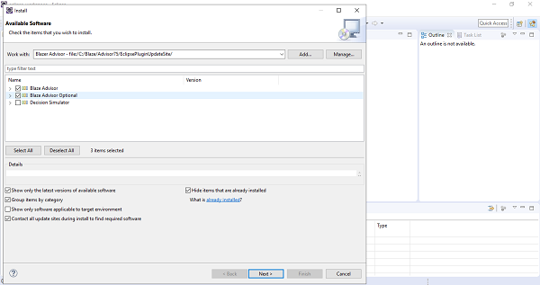
Aviso: Para utilizar o plug-in do Blaze:
Ao reiniciar, Colocar a licença do Blaze.
Link para lincença:
Após colocar a licença:
Window - Perspective - Open Perspective - Other.
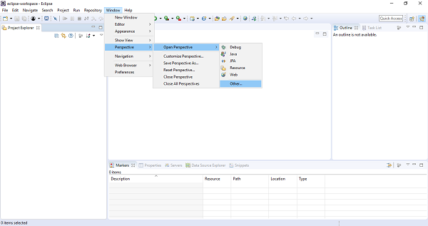
- blaze Advisor - Open.
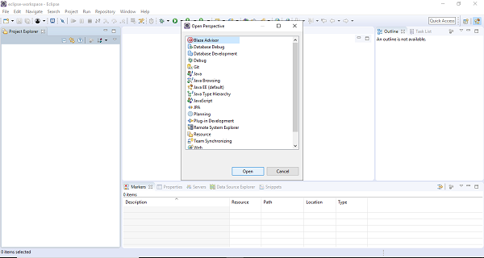
Criando Repositório
Todo nosso ambiente será preparado na pasta
C:\Blaze\projetos
1) Criar uma pasta com o nome escolhido para o seu repositorio em C:\Blaze\projetos
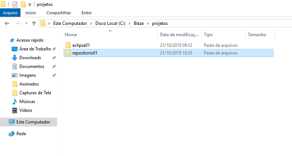
2) Neste tutorial com exemplo, iremos utilizar o sistema de versionamento do Blaze (bvs) privado.
Aviso: Este sistema de versionamento funciona com base em duas partes, uma denominada Central e outra Admin. A parte central mantém um histórico de tudo que for feito no Blaze e a parte Admin é o usuário criado para gerenciar o repositório/projeto.
Crie dentro da pasta do seu repositorio, as seguintes pastas:
bvs-central
bvs-admin
Workspaces
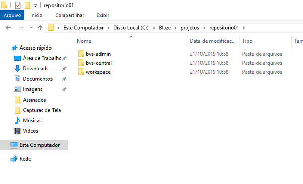
3)Iniciando o repositório no eclipse:
Após criar as pastas necessárias volte ao projeto vá em:
Repository - New Repository [Novo Repositório] 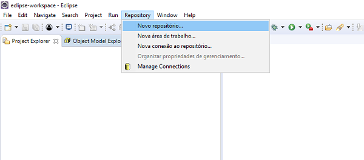
4)Escolher um [NOME] para o repositório. No meu caso: RepositorioLucas
>Escolher um Repository Type [Tipo de Repositório]: repositório de Arquivos (Controle de Versão de BVS - Privado).
>Ainda nesta janela, fazer referenciar as pastas bvs-admin e bvs-central que foi criada.
>Assim comom nas imagens abaixo, você deverá referenciar a pasta bvs-central primeiro em seguida a pasta bvs-admin.
>Colocar admin como usuário nas duas opções. (Não é necessario a utilização de senha neste caso).
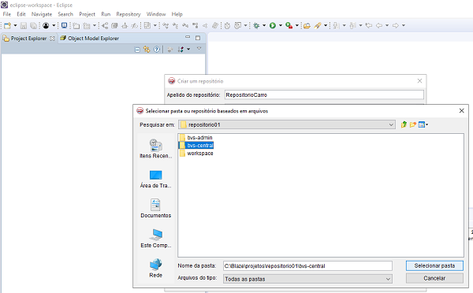
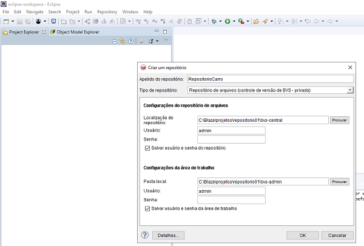
Criando um projeto
A estrutura do nosso projeto será a seguinte:
> Technical - Business - Testing - Decision ServicesCada parte será um subprojeto e terá funções específicas.
Para iniciar, iremos criar a parte Technical do projeto na aba:
File - New - Project 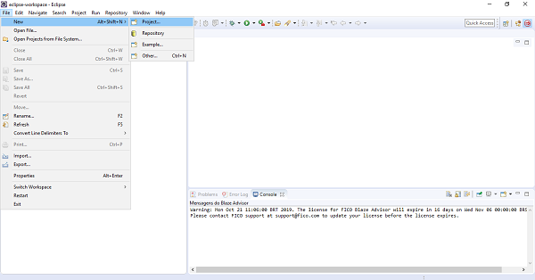
Blaze Advisor - Rule Project - Next 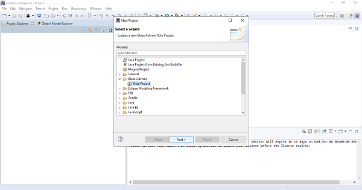
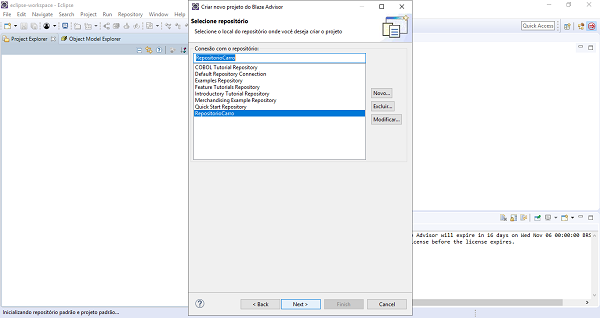
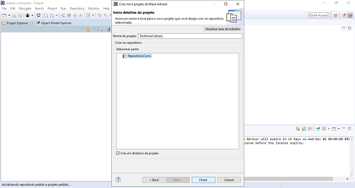
Business Object Model (BOM)
1) Será utilizado um arquivo.jar para importar as classes e as variáveis que será utilizado neste exemplo.
Em seu projeto Blaze você deve preparar um rol de variáveis que irá trabalhar.
Neste projeto iremos trabalhar com as seguintes variáveis:
RENDA - SEXO - IDADE - ESTADO_CIVIL - NUMERO_CONDUTORES DIARIA - VALOR_AUTOMOVEL - VALOR_CAUCAO - CLIENT_TYPE - DECISION Em um tutorial à parte eu ensino você a como criar um arquivo.jar. Link parar o curso:
Porém, nesse tutorial iremos utilizar um arquivo.jar pronto.
2) o arquivo bom-Carro3.jar no drive:
C:\Blaze\projetos Importando o BOM.jar no projeto
Window - Preferences
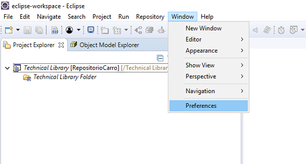
3) Clicar em Blaze Advisor e ir em add library.
Procurar pelo arquivo que salvamos na pasta de projetos bom-Carro3.jar
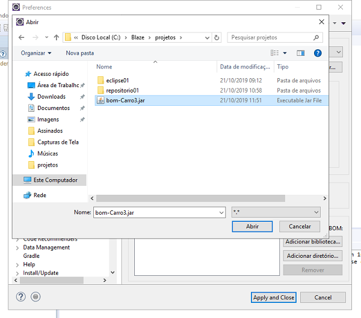
Após selecioado, o arquivo aparecerá na caixa de texto localizada no canto inferior esquerdo da tela.
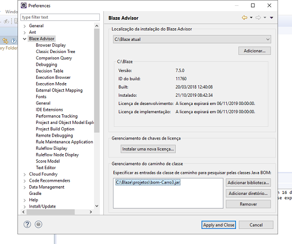
Apply and Close.
Usando o bom-Carro3.jar
1) Clicar com o botão direito do mouse sobre a pasta Technical Library.
New - Folder [Pasta].
Colocar o nome de [BOM].
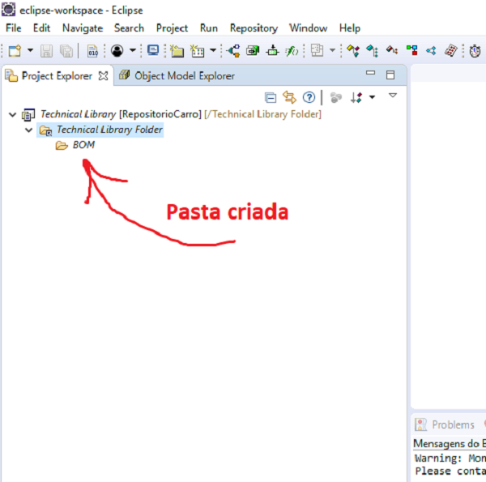
2) Clicar com o botão direito do mouse sobre a pasta BOM.
New - Business Object Model - Modelo Java
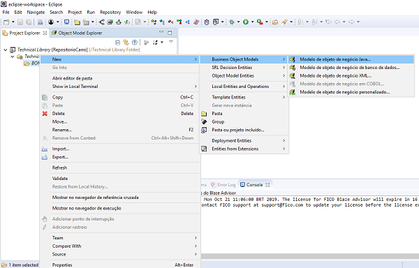
3) Selecionar as pastas:
A classe input e adicionar [Add].
A classe output e adicionar [Add].
next - Finish.
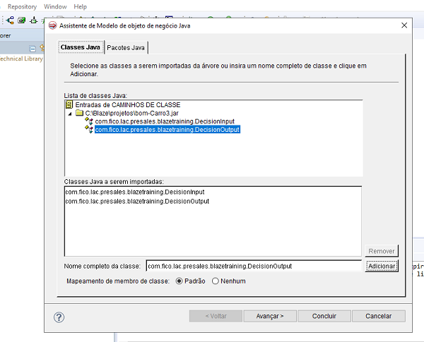
Aviso: Dentro da pasta BOM, no editor eclipse, foi criado um arquivo [Java]. Podemos renomeá-lo para JavaBOM para facilitar nossa compreensão.
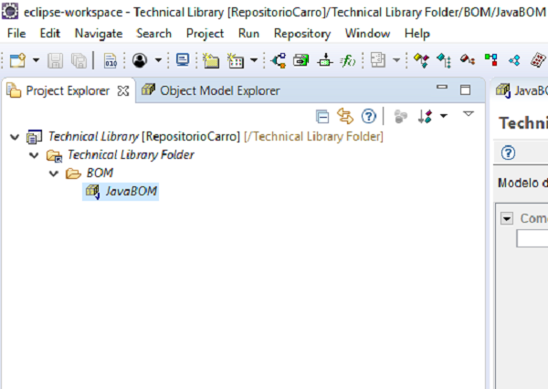
4)Clicar com o botão direito do mouse sobre a pasta BOM.
Team - Check-in.
Adicionar um comentário e fazer o Check-in.
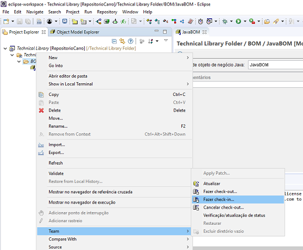
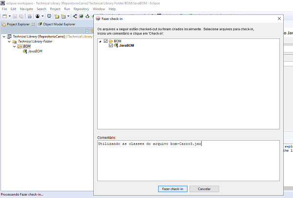
Aviso: A todo momento iremos utilizar as funções Check-in e Check-out.
Check-in: pode ser entendido como [SALVAR]
Check-out: pode ser entendido como [EDITAR]
Criação do Projeto
File - New - Project - Blaze Advisor - Rule Project - Next - RepositorioCarro - Next - RepositorioCarro - name: Business Library - Finish. 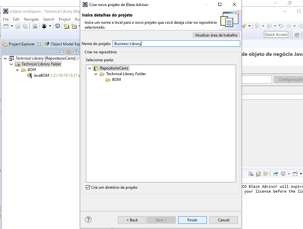
- Testing:
File - New - Project - Blaze Advisor - Rule Project - Next - RepositorioCarro - Next - RepositorioCarro - name: Testing - Finish. - Decision Services:
File - New - Project - Blaze Advisor - Rule Project - Next - RepositorioCarro - Next - RepositorioCarro - name: RegrasAluguelCarros - Finish. O projeto ficará assim:
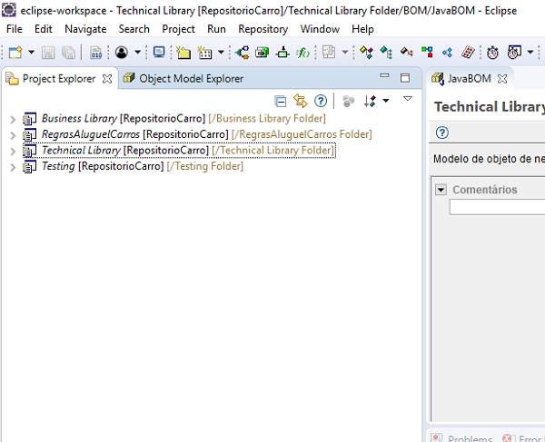
Conectando os Projetos
Para conectar todos os projetos faça o seguinte:
1) Clicar com o botão direito do mouse sobre o projeto [Regras...] e:
open project editorNa área de edição do projeto, clicar no ícone, como mostra na imagem a seguir:
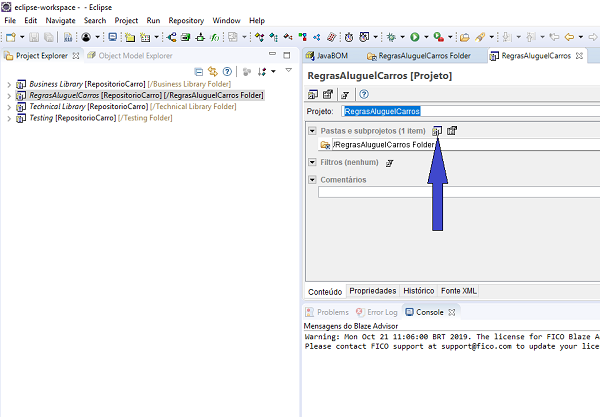
Incluir os projetos Business Library e Technical
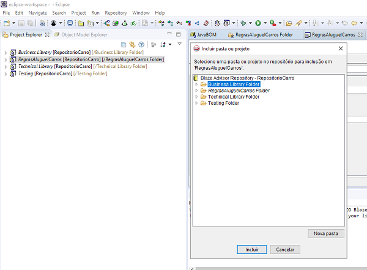
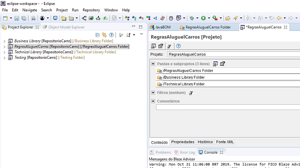
2) Clicar no ícone Salvar, na barra superior e fazer o Check-in clicando com o botão direito sobre o projeto [Regras...] e indo na opção (team).
Aviso: Agora os projetos estão conectados com o seu projeto [Regras...].

3) Agora podemos fechar os projetos que estão conectados ao projeto principal.
Para fechar os projetos conectados ao principal basta clicar com o botão direito do mouse sobre o projeto que deseja fechar e ir na opção Close Project.
Aviso: Fechar todos os projetos, deixar somente o [Regras...].
Fazer Check-in em [Regras...].
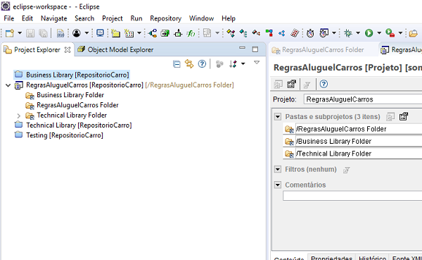
RMA [Rule Maintenance Application]
Antes de iniciar as configurações, vá em:
C:\Blaze\projetos e crie um pasta chamada adb.
1) Criar uma pasta com o nome de Deploy dentro do projeto Technical. Clicar com o botão direito sobre a pasta Technical dentro do projeto principal [Regras...].
New - Folder - Name: Deploy. 2)Clicar com o botão direito do mouse sobre a pasta criada [Deploy].
New - Deployment Entities - Rule Maintenance Application Definition - Entity Name: RMADefinition - Finish. 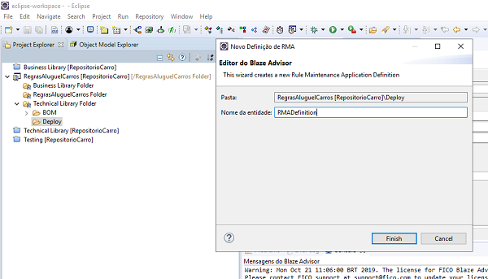
3) Na aba RMADefinition:
-
Application Title [Título do Aplicativo]: Regras de Aluguel de Carros
-
Habilitar as seguintes opções:
- Download Rules Command
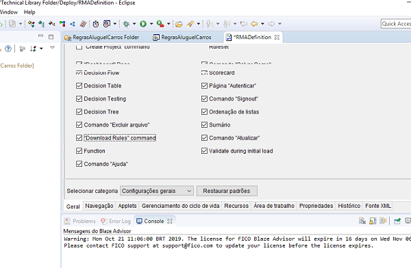
- 4)Ir na aba navigate, escolher as pastas que irão aparecer no RMA. As pastas que não vão aparecer devem ficar do lado direito.
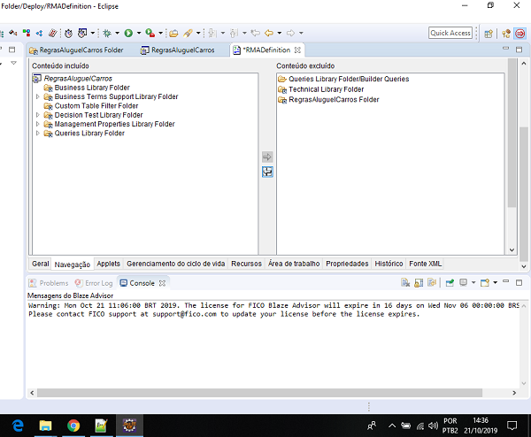
5)Ir na aba applets e marcar as opções:
Allow Editing of Table Name.
Display Branch Condition. 6) Ir na aba Life Cycle Management, marcar todas as opções e referenciar a pasta adb criada no início deste tópico, como mostra a imagem a seguir:
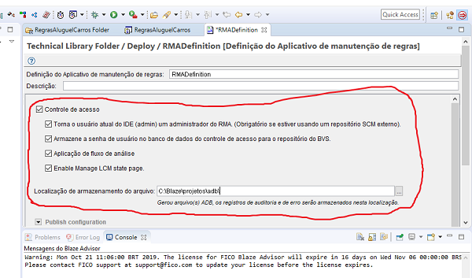
- 7) Ir no ícone SALVAR ALL na barra superior do eclipse e fazer o check-in clicando com o botão direito sobre o arquivo RMADefinition que está dentro da pasta Deploy.
-
1)No eclipse, clicar com o botão direito do mouse sobre a pasta:
Technical Library - New - Folder - Name: Entrypoint.
Função EntryPoint
2)Clicar com o botão direito do mouse sobre a pasta:
Entrypoint - New - SRL Decision Entities - Function - Name: entrypoint - Finish.
Name: entrypoint
Type: Decisioninput Aviso: Faça como na imagem a seguir:

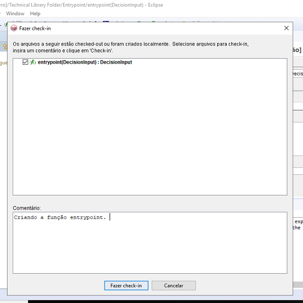
Variavel Global Input
Criando uma variável global input.
1) Clicar com o botão direito sobre a pasta Technical
New - Object Model Entities - Variable
Fazer check-in.
Gerar RMA
1)Clicar no projeto principal [Regras...] e ir em:
Project - Rule Maintenance Application - Generate Rule Maintenance Application.
Este comando irá abrir uma janela pop-up chamada Gerador de Aplicativo.
Aviso: O Blaze (eclipse) já reconhece o arquivo de configurações que criamos, o RMADefinition. Este arquivo configura o deploy do projeto para o RMA WEB.
Deixar a opção de Deploy como:
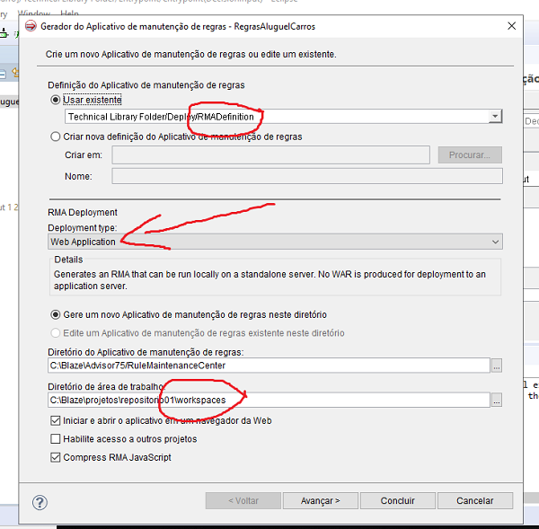
2) Clicar em next, devemos selecionar o arquivo bom-Carro3.jar que criamos e anexamos ao nosso projeto e, por fim, clicar em concluir.
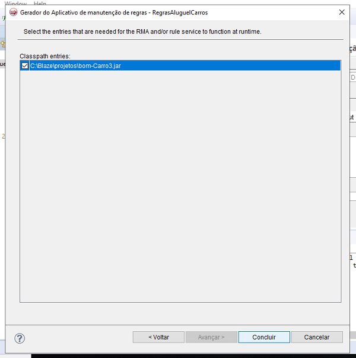
O RMA irá abrir automaticamente no navegador Internet Explorer e irá utilizar o local host [http://127.0.0.1:8080] para gerar a interface.
Aviso: Você pode copiar o link e trocar de navegador.
Se você seguiu todos os passos até aqui, basta digitar admin e admin na senha para que você acesse a interface do RMA.
Você acaba de acessar o RMA.
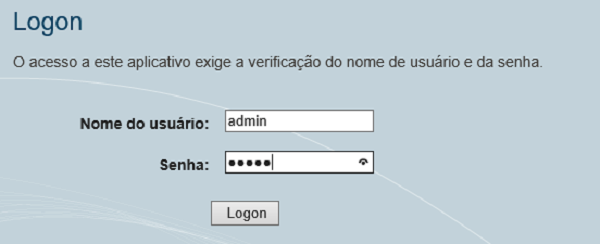
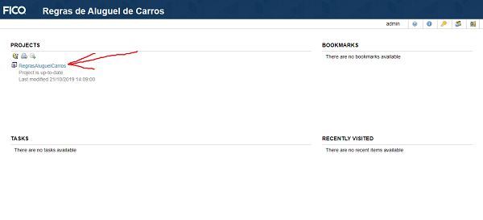
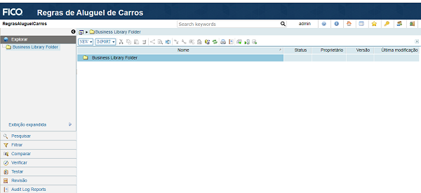
Mais Tutoriais - Blaze
-
2º Etapa - Utilizando o RMA :
-
3º Etapa - Deploy no Tomcat :
-
4º Etapa - Avançado - Em construção